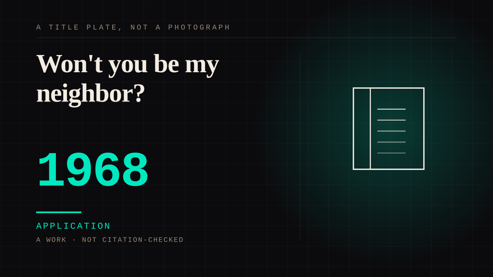

A work · 1968 · Television
Won't you be my neighbor?
Fred Rogers went national on public television on 19 February 1968 and spent thirty-three years talking, slowly, into the camera at children aged two to five. The show's offer is mutual in its own words - "Won't you be my neighbor?" - and its host insisted he was not acting a character, only sharing his real self. The bond was engineered, and returned by people who could not answer.

The address was deliberate, slow and aimed at the youngest viewer, and the show's own research treats the screen as a face. Rogers spoke directly into the lens and, as the show's article records, made a point of behaving "naturally on camera rather than acting out a character": "One of the greatest gifts you can give anybody is the gift of your honest self. I also believe that kids can spot a phony a mile away." The pace was a design choice. Discussing it, Rogers quoted the program's own finding - "the younger the child, the more interested they are in the program when my face is on the screen" - and reached the comparison this entry is built on: "the younger children might consider the television screen as another mother's face." The show went to hard places on purpose: in the summer of 1968, after Robert F. Kennedy was shot, it had the puppet Daniel Striped Tiger ask what assassination meant, because Rogers thought small children would feel the adults' fear and deserved to be spoken to.
The offer is mutual in the song and one-sided in fact.
"Won't you be my neighbor?" asks a question the viewer answers by watching, and the closing line reassures a child that "there's only one person in the whole world that's like you, and that's you." That is the fourth wall stepped through on purpose - and unlike the fictional figures this site usually files, Rogers staked the whole thing on the speaker being a real man rather than a character. The attachment shows in what viewers did with it: families reported children donning a sweater and sneakers when the theme music began, and one of Rogers' cardigans now hangs in the Smithsonian. Thirty-three years, and the format stayed, in the same article's word, "virtually unchanged."
The counter-argument is that this is ordinary children's television and Rogers would have refused the frame. He spent his life insisting on honesty and would not have claimed his viewers had a relationship with him, only that he spoke to them truthfully. It loses on the structure rather than on the sentiment: the address runs one way, a child's reply - a shout at the screen, a sweater - does not reach the set, and the program's own research treats the young viewer's attention to the face as the thing being built. He is the honest ancestor of the engineered pause that arrives in children's television later in the century: the show came after howdy-doody and before Blue's Clues, and this shelf is the address, not the puppets. Contestable, and recorded as such.
Application. One-sided attachment put to work on purpose. Creator economies, community, fandom as infrastructure, and the things that genuinely help people. Not automatically good - a tool with an obvious use is a tool that will also get a bad one.
Consideration. The part where somebody stops and thinks. The research, the diagnosis, the ethics, the lawsuits, the regulators. Roughly fifty years of arguing with itself about whether this is a relationship.
Where it sits
1950 1950-1999 · 1968 1999
Provenance · 4 source record(s)
- unverifiedThe premiere date as reported - Fred Rogers going national on public television on February 19, 1968 - and the quotations this entry uses: Rogers on honesty ("Every one of us longs to be in touch with honesty") and on the program's research ("the younger the child, the more interested they are ... when my face is on the screen"; "the younger children might consider the television screen as another mother's face"); the summer-1968 prime-time segment in which Daniel Striped Tiger asks the definition of "assassination" after Robert F. Kennedy was shot; and the sweater-and-sneakers routine children imitated. Read through a search index rather than fetched, so the record is unverified: a reader can open this page, this agent did not.NPR / Fresh Air, "It's A Beautiful 50th Birthday For 'Mister Rogers' Neighborhood'" (19 February 2018) ↗
- unverifiedThat the American national debut was February 19, 1968; that during each segment Rogers "spoke directly to the viewer" and "made a point simply to behave naturally on camera rather than acting out a character," with the quotation "One of the greatest gifts you can give anybody is the gift of your honest self. I also believe that kids can spot a phony a mile away"; the format remaining "virtually unchanged" for the whole run; the closing "There's only one person in the whole world that's like you" reassurance; and that one of Rogers' sweaters hangs in the Smithsonian. Read through a search index rather than fetched, so the record is unverified: a reader can open this page, this agent did not.Wikipedia, "Mister Rogers' Neighborhood" ↗
- unverifiedThe biographical frame: Fred McFeely Rogers (1928-2003), Presbyterian minister and host of Mister Rogers' Neighborhood, which began airing nationally in 1968 and ran for 895 episodes; and that a special segment dealing with the assassination of Robert F. Kennedy aired on June 7, 1968, two days after the assassination. Read through a search index rather than fetched, so the record is unverified: a reader can open this page, this agent did not.Wikipedia, "Fred Rogers" ↗
- unverifiedThe first episode's air date (February 19, 1968) and its contents: Rogers talking about learning to tie his shoes as he changes into his sneakers, and singing "I Like You As You Are." Read through a search index rather than fetched, so the record is unverified: a reader can open this page, this agent did not.The Mister Rogers' Neighborhood Archive, "Episode 0001" ↗
Connected · 3 out, 0 in
It sits in
The full timeline → · The database → · See it in the atlas →